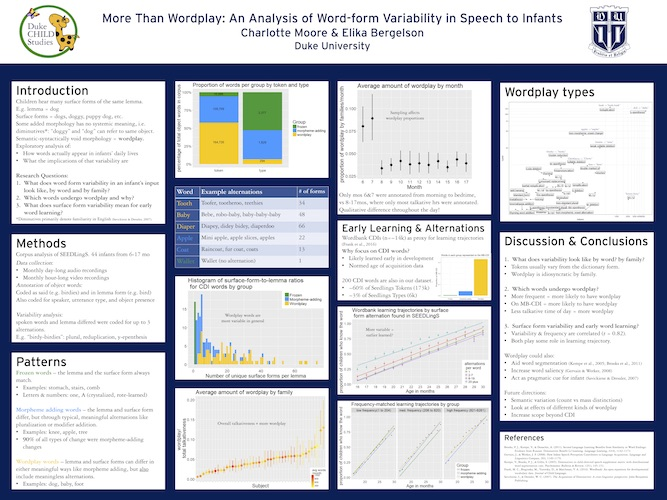
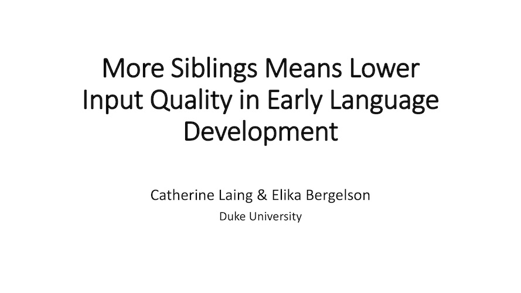
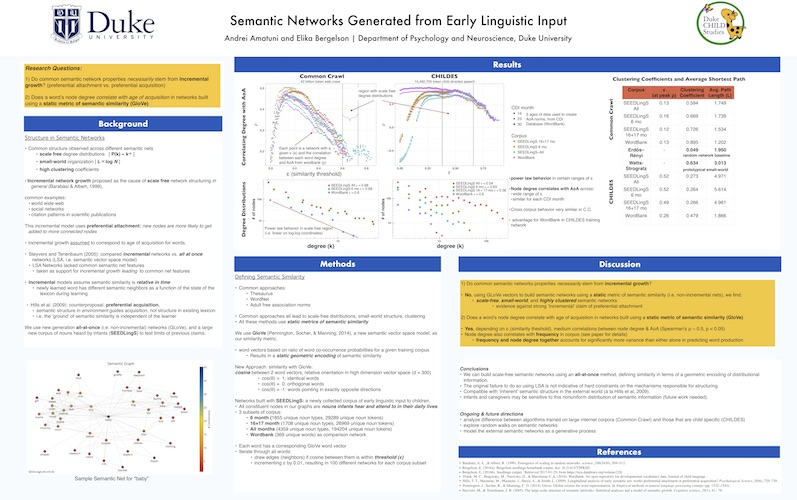

Posters & Presentations
Disclaimer: Research is ongoing and results are not final

Moore & Bergelson (2019)
"Who says it and what does it sound like? Quantifying within- and between- talker variability in infants’ naturalistic input"

Bulgarelli & Bergelson (2019)
"Syntax and the world agree on mass/count distinctions" Presented at BUCLD 2019 in Boston, MA.

Campbell & Bergelson (2019)
"Early vocabulary and hearing loss: Who's getting state services?" Presented at BUCLD 2019 in Boston, MA.
Moore & Bergelson (2019)
"18-month-olds’ representations of vowels in regular & irregular verbs: A mispronunciation study." Presented at WILD 2019 in Potsdam, Germany.

Dailey & Bergelson (2018)
"Linking input and vocabulary in infancy to preschool language skills." Presented at BUCLD 2018 in Boston, MA.

Amatuni, He, & Bergelson (2018)
"Preserved structure across vector space representations." Poster presented at CogSci 2018 in Madison, WI.

Moore & Bergelson (2018)
"Dog, doggy, dogs: Characterizing variability within and across families during infancy." Poster presented at ICIS 2018 in Philadelphia, PA.

Laing & Bergelson (2017)
"What did you say? Infants' early productions match caregiver input." Presented at BUCLD 2017 in Boston, MA.

Casillas, Bergelson, Seidl, Soderstrom & Warlaumont (2017)
"Characterizing North American child-directed speech by age, gender, and SES." Poster presented at BUCLD 2017 in Boston, MA.

Dailey & Bergelson (2017)
"Why do female infants say more words? An input/output analysis of talking status and gender." Poster presented at BUCLD 2017 in Boston, MA.

Moore & Bergelson (2017)
"More than wordplay: An analysis of word-form variability in speech to infants." Poster presented at BUCLD 2017 in Boston, MA.

Laing & Bergelson (2017)
"More siblings means lower input quality in early language development." Presented at CogSci 2017 in London, England.

Amatuni & Bergelson (2017)
"Semantic networks generated from early linguistic input." Poster presented at CogSci 2017 in London, England.

Dailey & Bergelson (2017)
"Semantic relatedness effects in early word learning." Presented at SRCD 2017 in Austin, TX.

Dailey, Amatuni & Bergelson (2016)
"Semantic relatedness effects in early word learning." Poster presented at HRHR 2016 in Bethesda, MD.